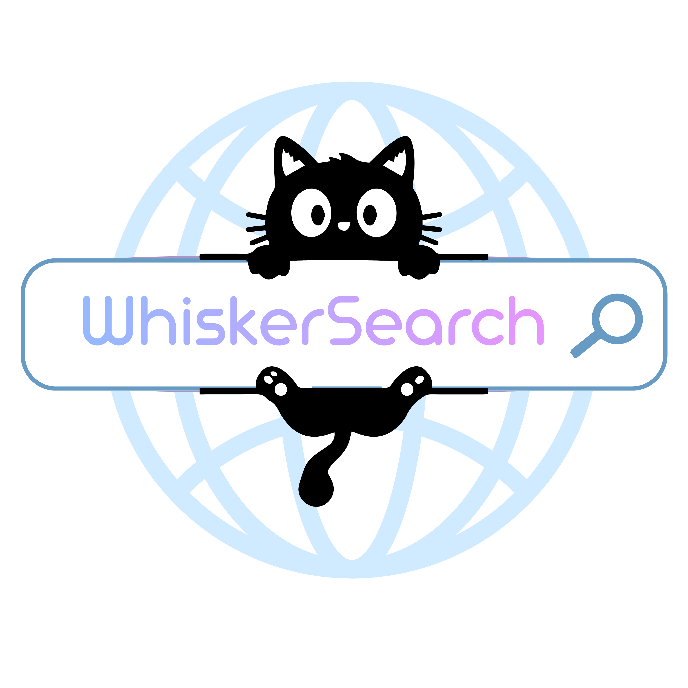

WhiskerSearch taşındı!
WhiskerSearch artık yeni adresinde. Güncel WhiskerSearch'e ve tüm WhiskerHub projelerine buradan ulaşabilirsin.
Yeni adres hazırlanıyor...
✓
WhiskerSearch'e Git
WhiskerHub • WhiskerSearch